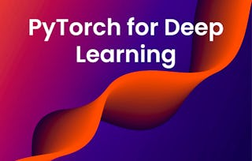

Your path to AI fluency with the Google AI Professional Certificate. Enroll now!
Discover new courses on Coursera
Whether you’re switching fields, advancing your skills, or just starting out—you can find the latest learning here. Get access to new courses each month with Coursera Plus.
Trending new courses

Unlock 10,000+ courses with one subscription
New courses by industry
Computer Science
Introduction to Jira
Atlassian
Course
Retrieval Augmented Generation (RAG)
DeepLearning.AI
Course
Information Security Analyst
EC-Council
Professional Certificate
Introduction to Confluence
Atlassian
Course
Information Technology
Data Science
Business
Health
Explore more on Coursera
Most popular courses and skills
Discover the courses and programs that learners are enrolling in the most right now.
Top certification prep courses
Get the skills and hands-on practice you need to prepare for popular certification exams.
Gain essential AI skills
Learn from AI experts and industry leaders such as Google, Microsoft, IBM, and Vanderbilt University.
World-class learning for anyone, anywhere
Explore new skills
Gain practical subject matter knowledge with hands-on experience, videos and real-world projects.
Earn valuable credentials
Progress at your own pace with 100% online courses available on your desktop or mobile device.
Learn from the best
Earn recognized credentials from leading universities and companies to achieve your goals.